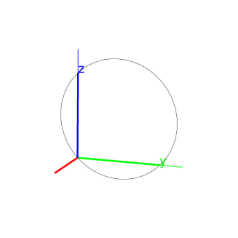
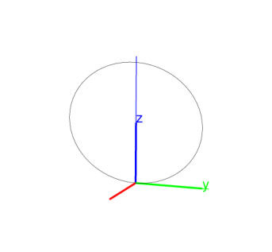

Example
Input:
circle(point(0,0,1),point(0,1,0),point(0,2,2))
Output:

Two points and a vector.
-
circle takes three points:
-
C, a point (which can be given by its coordinates).
- v, a vector.
- A, a point (which can be given by its coordinates).
- circle(C,v,A) returns and draws the circle in plane
C(C+v)C with center C and containing C+v.
Example
Input:
circle(point(0,0,1),vector(0,1,0),point(0,2,2))
Output:
